单细胞基因集评分之AUCell
原文：https://mp.weixin.qq.com/s?__biz=MzAwMzIzOTk5OQ==&mid=2247491761&idx=1&sn=41f5c1ceaacf6a1c4840567f8a349e06&chksm=9b3c99e1ac4b10f7ca158561e96fec76a49ff32b8412cb146ed3fb7aa9260c75172b4eb16f9a#rd 合集：单细胞教程全收录
一、写在前面：

此前已经给大家简单介绍过了五种单细胞基因集打分方法，包含AddModuleScore、ssGSEA、GSVA、PercentageFeatureSet、AUCell：一文搞定单细胞基因集评分。但最近在做SCENIC(用于单细胞转录因子调控网络预测)的教程，其中用到了AUCell这一R包/算法来计算regulon 的活性，本以为AUCell是其他的哪位大佬开发的，没想到是作者在设计SCENIC时顺手写的基因集打分方法，看来硬生信和软生信之间的鸿沟是真实存在的，AUCell值得我们用单独的版面来介绍。
考虑节省时间我们先将图文 教程更新出来，不知诸位是否需要视频 教程（真的还蛮花时间的），老规矩，上票:
**
**
二、教程：
1.0 AUCell简介AUCell可以在单细胞测序数据种鉴定/识别激活的基因集，主要实现方式是通过曲线下面积(Area Under the Curve, AUC)去计算每个细胞中是否存在富集的关键基因集(signature)。输出的AUC scores 类似于GSVA score，可以用于反应signature 的相对表达量。值得一提的是，由于GSVA score的计算方式基于排序和AUC，因此计算过程并不受基因表达量的单位 以及normalization 的影响；并且AUC scores是以每一个细胞为单位 进行计算的，因此处理大数据内存吃紧时，对每个子集计算AUC score再合并也无妨。
2.0. 分析前准备
2.0.1 版本信息
大家软件装不上时第一件事就应该检查环境的版本信息：
sessionInfo()
R version 4.2.1 (2022-06-23 ucrt)Platform: x86_64-w64-mingw32/x64 (64-bit)Running under: Windows 10 x64 (build 19044)Matrix products: defaultlocale:[1] LC_COLLATE=Chinese (Simplified)_China.utf8 [2] LC_CTYPE=Chinese (Simplified)_China.utf8 [3] LC_MONETARY=Chinese (Simplified)_China.utf8[4] LC_NUMERIC=C [5] LC_TIME=Chinese (Simplified)_China.utf8 attached base packages:[1] stats4 stats graphics grDevices utils datasets methods base other attached packages: [1] rbokeh_0.5.2 shiny_1.7.2 RColorBrewer_1.1-3 [4] NMF_0.24.0 cluster_2.1.3 rngtools_1.5.2 [7] pkgmaker_0.32.2 registry_0.5-1 DT_0.24 [10] Rtsne_0.16 dplyr_1.0.9 BiocParallel_1.30.3 [13] GSEABase_1.58.0 graph_1.74.0 annotate_1.74.0 [16] XML_3.99-0.10 AnnotationDbi_1.58.0 IRanges_2.30.0 [19] S4Vectors_0.34.0 Biobase_2.56.0 BiocGenerics_0.42.0 [22] AUCell_1.18.1 Matrix_1.4-1 data.table_1.14.2 loaded via a namespace (and not attached): [1] plyr_1.8.7 lazyeval_0.2.2 [3] splines_4.2.1 crosstalk_1.2.0 [5] GenomeInfoDb_1.32.3 ggplot2_3.3.6 [7] gridBase_0.4-7 pryr_0.1.5 [9] digest_0.6.29 foreach_1.5.2 [11] htmltools_0.5.3 fansi_1.0.3 [13] magrittr_2.0.3 memoise_2.0.1 [15] doParallel_1.0.17 mixtools_1.2.0 [17] tzdb_0.3.0 limma_3.52.2 [19] Biostrings_2.64.0 readr_2.1.2 [21] matrixStats_0.62.0 R.utils_2.12.0 [23] colorspace_2.0-3 blob_1.2.3 [25] usdata_0.2.0 xfun_0.32 [27] crayon_1.5.1 RCurl_1.98-1.8 [29] jsonlite_1.8.0 hexbin_1.28.2 [31] GEOquery_2.64.2 survival_3.3-1 [33] iterators_1.0.14 glue_1.6.2 [35] gtable_0.3.0 zlibbioc_1.42.0 [37] XVector_0.36.0 DelayedArray_0.22.0 [39] kernlab_0.9-31 maps_3.4.0 [41] scales_1.2.1 DBI_1.1.3 [43] Rcpp_1.0.9 xtable_1.8-4 [45] bit_4.0.4 htmlwidgets_1.5.4 [47] httr_1.4.4 ellipsis_0.3.2 [49] pkgconfig_2.0.3 R.methodsS3_1.8.2 [51] sass_0.4.2 utf8_1.2.2 [53] crul_1.2.0 tidyselect_1.1.2 [55] rlang_1.0.4 reshape2_1.4.4 [57] later_1.3.0 munsell_0.5.0 [59] tools_4.2.1 cachem_1.0.6 [61] cli_3.3.0 generics_0.1.3 [63] RSQLite_2.2.16 evaluate_0.16 [65] stringr_1.4.1 fastmap_1.1.0 [67] yaml_2.3.5 knitr_1.39 [69] bit64_4.0.5 airports_0.1.0 [71] cherryblossom_0.1.0 purrr_0.3.4 [73] KEGGREST_1.36.3 nlme_3.1-157 [75] sparseMatrixStats_1.8.0 mime_0.12 [77] R.oo_1.25.0 xml2_1.3.3 [79] compiler_4.2.1 curl_4.3.2 [81] png_0.1-7 tibble_3.1.8 [83] bslib_0.4.0 stringi_1.7.8 [85] gistr_0.9.0 lattice_0.20-45 [87] vctrs_0.4.1 pillar_1.8.1 [89] lifecycle_1.0.1 BiocManager_1.30.18 [91] jquerylib_0.1.4 bitops_1.0-7 [93] httpuv_1.6.5 GenomicRanges_1.48.0 [95] R6_2.5.1 promises_1.2.0.1 [97] codetools_0.2-18 MASS_7.3-57 [99] assertthat_0.2.1 SummarizedExperiment_1.26.1[101] withr_2.5.0 httpcode_0.3.0 [103] openintro_2.3.0 GenomeInfoDbData_1.2.8 [105] parallel_4.2.1 hms_1.1.2 [107] grid_4.2.1 tidyr_1.2.0 [109] rmarkdown_2.15 DelayedMatrixStats_1.18.0 [111] segmented_1.6-0 MatrixGenerics_1.8.1
2.0.2 安装
if (!requireNamespace("BiocManager", quietly=TRUE)) install.packages("BiocManager")# To support paralell execution:BiocManager::install(c("doMC", "doRNG","doSNOW"))# For the main example:BiocManager::install(c("mixtools", "SummarizedExperiment"))# For the examples in the follow-up section of the tutorial:BiocManager::install(c("DT", "plotly", "NMF", "d3heatmap", "shiny", "rbokeh", "dynamicTreeCut","R2HTML","Rtsne", "zoo"))BiocManager::install('AUCell')
2.0.3 获取帮助文档
大部分的包都可以这样调用帮助文档
#在浏览器中查看browseVignettes(package="AUCell") #命令行中查看vignette(package="AUCell") # listvignette("AUCell") # zoom中打开
2.0.4
作者贴心的给了一个Rmarkdown的模板，大家可以这样调用，使用AUCell的时候就不用重复写报告啦
vignetteFile <- paste(file.path(system.file('doc', package='AUCell')), "AUCell.Rmd", sep="/")# Copy to edit as markdownfile.copy(vignetteFile, ".")# Alternative: extract R codeStangle(vignetteFile)
2.1. 最简单的用法
library(AUCell)#给定一个基因集geneSets <- list(geneSet1=c("gene1", "gene2", "gene3"))#计算富集分数：cells_AUC <- AUCell_run(exprMatrix, geneSets, aucMaxRank=nrow(cells_rankings)*0.05)#这一步其实就可以得到AUC score#可选：通过设定阈值将AUC score转换为二元矩阵(判断基因集是否激活，用于在SCENIC中判断regulon是否激活)par(mfrow=c(3,3))set.seed(123)cells_assignment <- AUCell_exploreThresholds(cells_AUC, plotHist=TRUE, nCores=1, assign=TRUE)
2.2. 测试数据
2.2.1 表达矩阵
数据来源为GSE60361，该数据集中包含3005个细胞，物种为mouse，组织来源为cortex 和hippocampus 。
#下载数据：if (!requireNamespace("GEOquery", quietly = TRUE)) BiocManager::install("GEOquery")geoFile <- "GSE60361_C1-3005-Expression.txt.gz"# download.file("https://ftp.ncbi.nlm.nih.gov/geo/series/GSE60nnn/GSE60361/suppl/GSE60361_C1-3005-Expression.txt.gz", destfile = geoFile)library(data.table)exprMatrix <- fread(geoFile, sep="\t")exprMatrix[1:5,1:5]#第一列是基因名，需要将其转换为行名
## cell_id 1772071015_C02 1772071017_G12 1772071017_A05 1772071014_B06
## 1: Tspan12 0 0 0 3
## 2: Tshz1 3 1 0 2
## 3: Fnbp1l 3 1 6 4
## 4: Adamts15 0 0 0 0
## 5: Cldn12 1 1 1 0
Hide
geneNames <- unname(unlist(exprMatrix[,1, with=FALSE]))geneNames[1:5]
## [1] "Tspan12" "Tshz1" "Fnbp1l" "Adamts15" "Cldn12"
exprMatrix <- as.matrix(exprMatrix[,-1, with=FALSE])rownames(exprMatrix) <- geneNamesexprMatrix <- exprMatrix[unique(rownames(exprMatrix)),]dim(exprMatrix)
## [1] 19970 3005
exprMatrix[1:5,1:4]
## 1772071015_C02 1772071017_G12 1772071017_A05 1772071014_B06
## Tspan12 0 0 0 3
## Tshz1 3 1 0 2
## Fnbp1l 3 1 6 4
## Adamts15 0 0 0 0
## Cldn12 1 1 1 0
#将矩阵转换为稀疏矩阵library(Matrix)exprMatrix <- as(exprMatrix, "dgCMatrix")#保存成RdatamouseBrainExprMatrix <- exprMatrixsave(mouseBrainExprMatrix, file="exprMatrix_MouseBrain.RData")
这里为了加速演示过程并节省计算资源，做一个抽样，随机抽取表达矩阵中的5000个基因
set.seed(333)#设定随机数一定程度上保证结果的可重复性load('exprMatrix_MouseBrain.RData')exprMatrix <- mouseBrainExprMatrix[sample(rownames(mouseBrainExprMatrix), 5000),]dim(exprMatrix)
## [1] 5000 3005
2.2.2 测试基因集
library(AUCell)library(GSEABase)gmtFile <- paste(file.path(system.file('examples', package='AUCell')), "geneSignatures.gmt", sep="/")geneSets <- getGmt(gmtFile)
这个数据的结构大概是这样:
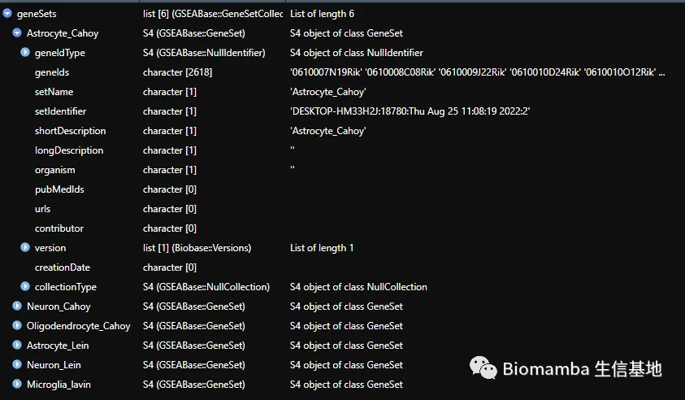
rownames(exprMatrix)[1:5]
## [1] "Gm5833" "Gm16119" "Arhgap44" "Snord99" "Ccl5"
#取出表达矩阵中包含的geneSets <- subsetGeneSets(geneSets, rownames(exprMatrix))#查看每个基因集中包含在表达矩阵中的基因数量nGenes(geneSets)
## Astrocyte_Cahoy Neuron_Cahoy Oligodendrocyte_Cahoy
## 526 404 469
## Astrocyte_Lein Neuron_Lein Microglia_lavin
## 7 15 159
#把每个基因集包含的基因数量加在基因集名称后面：geneSets <- setGeneSetNames(geneSets, newNames=paste(names(geneSets), " (", nGenes(geneSets) ,"g)", sep=""))names(geneSets)
## [1] "Astrocyte_Cahoy (526g)" "Neuron_Cahoy (404g)"
## [3] "Oligodendrocyte_Cahoy (469g)" "Astrocyte_Lein (7g)"
## [5] "Neuron_Lein (15g)" "Microglia_lavin (159g)"
为了确定上述基因集结果的真实性，这里掺入一些随机抽取 的模拟 基因集
set.seed(321)extraGeneSets <- c( GeneSet(sample(rownames(exprMatrix), 50), setName="Random (50g)"), GeneSet(sample(rownames(exprMatrix), 500), setName="Random (500g)"))#统计count大于0的基因：countsPerGene <- apply(exprMatrix, 1, function(x) sum(x>0))gene4use <- sample(names(countsPerGene)[which(countsPerGene>quantile(countsPerGene, probs=.95))], 100)#从表达量前5%的函数中随机抽取一百个基因#构建基因集：extraGeneSets <- c(extraGeneSets, GeneSet(gene4use, setName="HK-like (100g)"))#这些基因的表达量比较高，这里可以初步命名为house-keeping like Gene#合并测试基因集与模拟基因集geneSets <- GeneSetCollection(c(geneSets,extraGeneSets))names(geneSets)
## [1] "Astrocyte_Cahoy (526g)" "Neuron_Cahoy (404g)"
## [3] "Oligodendrocyte_Cahoy (469g)" "Astrocyte_Lein (7g)"
## [5] "Neuron_Lein (15g)" "Microglia_lavin (159g)"
## [7] "Random (50g)" "Random (500g)"
## [9] "HK-like (100g)"
2.3 AUCell流程
与GSVA不同的是，GSVA需要输入完整的表达矩阵(样本数、基因数以及表达矩阵的单位都会影响GSVA score的计算)。但是由于AUCell有一步rank的过程，因此输入矩阵的完整性要求没有那么严格。
2.3.1 一步法计算基因集的富集分数(AUC)
if(!require(BiocParallel))BiocManager::install('BiocParallel')
## 载入需要的程辑包：BiocParallel
BPPARAM=BiocParallel::MulticoreParam(5)#开5个核并行计算
## Warning in BiocParallel::MulticoreParam(5): MulticoreParam() not supported on
## Windows, use SnowParam()
cells_AUC <- AUCell_run(exprMatrix, geneSets)#1.16.0版本的AUCell没有AUCell_run这个函数，推荐在R4.2.1目录下安装AUCell的1.18.1版本#AUCell score的矩阵存在:cells_AUC@assays@data$AUC[1:4,1:4]
## cells
## gene sets 1772071015_C02 1772071017_G12 1772071017_A05
## Astrocyte_Cahoy (526g) 0.1463133 0.1372851 0.1588755
## Neuron_Cahoy (404g) 0.2775261 0.2978313 0.2960964
## Oligodendrocyte_Cahoy (469g) 0.1507791 0.1219598 0.1357430
## Astrocyte_Lein (7g) 0.1509872 0.1399535 0.2166086
## cells
## gene sets 1772071014_B06
## Astrocyte_Cahoy (526g) 0.1650442
## Neuron_Cahoy (404g) 0.3202570
## Oligodendrocyte_Cahoy (469g) 0.1296386
## Astrocyte_Lein (7g) 0.2485482
save(cells_AUC, file="cells_AUC.RData")#画个热图看一下：suppressMessages(if(!require(pheatmap))install.packages('pheatmap'))pheatmap(cells_AUC@assays@data$AUC,show_colnames = F)#没错，确实是连续性数值，因为AUCell score是一个积分，所以也不会像GSVA那样有负值啦。
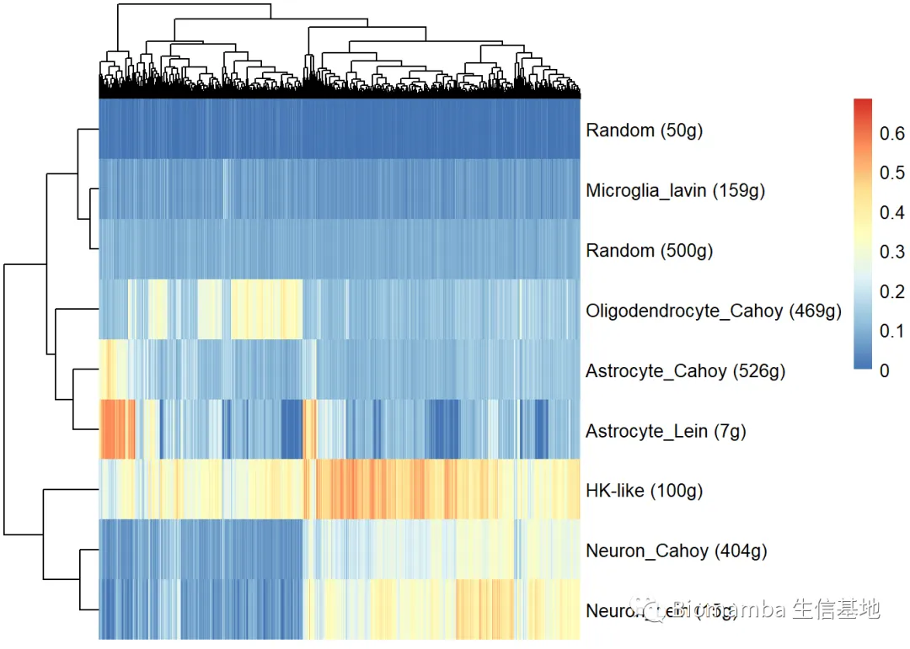
2.3.2 拆解计算步骤
AUCell_run等同于下面的AUCell_buildRankings+AUCell_calcAUC，拆分出来有利于大家理解AUCell的计算过程
plotGeneCount(as.matrix(exprMatrix))#可以先看一下每个细胞中表达的基因数量,这组细胞表达基因数量中位数不足一千个
## Quantiles for the number of genes detected by cell:
## (Non-detected genes are shuffled at the end of the ranking. Keep it in mind when choosing the threshold for calculating the AUC).
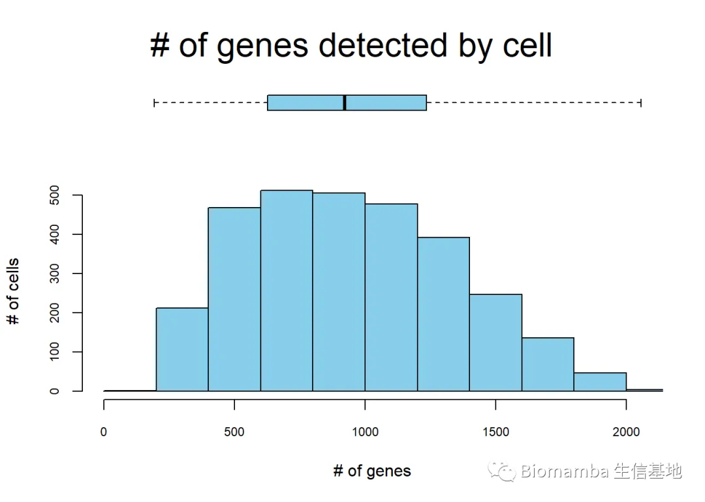
## min 1% 5% 10% 50% 100%
## 193.00 271.08 364.20 447.40 921.00 2056.00
cells_rankings <- AUCell_buildRankings(exprMatrix, plotStats=FALSE, splitByBlocks=TRUE)#把每一个细胞的基因从表达量由高向低排列cells_rankings#由于这步ranking，大家合并不同的数据集时需要保证数据集里每个细胞检测到的基因数量相近
## Ranking for 5000 genes (rows) and 3005 cells (columns).
##
## Top-left corner of the ranking:
## cells
## genes 1772071015_C02 1772071017_G12 1772071017_A05 1772071014_B06
## Gm5833 4904 3305 4028 3895
## Gm16119 2327 1596 1794 2610
## Arhgap44 182 2937 330 296
## Snord99 4021 2865 4514 4628
## Ccl5 3794 4095 3332 3794
## Sox18 4807 3052 3126 3365
## cells
## genes 1772067065_H06
## Gm5833 3028
## Gm16119 2588
## Arhgap44 157
## Snord99 2932
## Ccl5 2774
## Sox18 4918
cells_AUC <- AUCell_calcAUC(geneSets, cells_rankings)
## Warning in .AUCell_calcAUC(geneSets = geneSets, rankings = rankings, nCores =
## nCores, : Using only the first 250 genes (aucMaxRank) to calculate the AUC.
#为了应对大数据的计算以及去噪，只有每个细胞表达量最高的前5%的基因参与计算#这一比例可以通过'aucMaxRank'参数调整，比如：cells_AUC <- AUCell_calcAUC(geneSets, cells_rankings, aucMaxRank = ceiling(0.05 * nrow(cells_rankings)))
## Warning in .AUCell_calcAUC(geneSets = geneSets, rankings = rankings, nCores =
## nCores, : Using only the first 250 genes (aucMaxRank) to calculate the AUC.
按照我个人的理解，AUCell的过程类似于对每个细胞的基因排序后进行GSEA分析(GSEA的教程可以点这里)，然后把基因的排序作为一个连续值 ，求积分 。AUC一定程度上反应了signature基因表达的比例，并且可以代表它们相对于细胞内其他基因的相对表达值。换句话说，我们可以使用AUC来探索数据集中存在的细胞种群。AUC也会考虑到每个细胞中高度表达的基因在基因集中的比例。从基因集中表达很多基因的细胞将比表达较少的细胞拥有更高的AUC值，也就是说AUC的值在不同的基因集之间也是可以相互比较的。由于AUC一定程度上代表了signature中表达基因的比例，因此细胞间的相对AUC来根据基因集的表达来探索数据集中存在的细胞群体(根据SCENIC的文献报道利用AUCell score进行细胞分群的效果甚至要比大多数去除批次效用的方法都好)。但是由于AUCell score并不是一个绝对表达值，以及考虑到细胞大小、选择的基因集的大小(越大的基因集AUCell score越大，并且越容易呈现正态分布)和表达情况、单细胞测序矩阵的稀疏性，通过AUCell score来判断一个基因集的表达是激活还是沉默需要进一步的探索。这个问题实质上需要解决如何将AUCell score这一连续性矩阵转换为二项分布的矩阵。这时可以用AUCell_exploreThresholds()自动绘制直方图，并自动计算数个阈值，可以用来考虑一个基因集是on或off“(在$aucThr中返回)。对应的阈值用匹配颜色的竖条表示，较粗的竖线表示软件默认选择的阈值($aucThr$selected)，这一阈值能够最大限度的减少假阳性。
if (!requireNamespace("mixtools", quietly=TRUE))BiocManager::install("mixtools") set.seed(123)par(mfrow=c(3,3)) cells_assignment <- AUCell_exploreThresholds(cells_AUC, plotHist=TRUE, assign=TRUE)#计算阈值并绘制柱状图
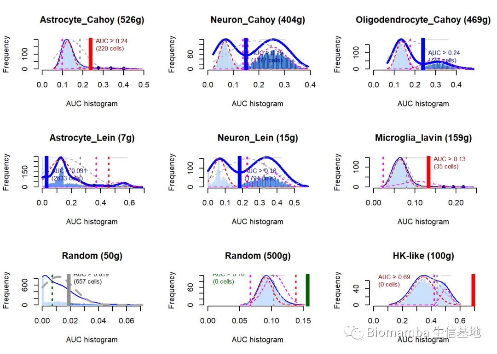
#返回的数据结构包含软件选择的最佳阈值，其他阈值的返回结果(阈值参数与当前阈值下"on"的细胞数量)，软件返回的commentcells_assignment$`Astrocyte_Cahoy (526g)`$aucThr
## $selected
## L_k2
## 0.2384452
##
## $thresholds
## threshold nCells
## Global_k1 0.18579694 375
## L_k2 0.23844518 220
## R_k3 0.09762972 2629
##
## $comment
## [1] ""
warningMsg <- sapply(cells_assignment, function(x) x$aucThr$comment)#把comment循环取出warningMsg[which(warningMsg!="")]#查看非空的comment
## Random (500g)
## "The AUC might follow a normal distribution (random gene-set?). The global distribution overlaps the partial distributions. "
#之间混入的随机选取的基因集被发现了，判定为正态分布的矩阵#同样的代码我们可以得到每个geneset的最佳阈值：sapply(cells_assignment, function(x) x$aucThr$selected)
## Astrocyte_Cahoy (526g).L_k2
## 0.23844518
## Neuron_Cahoy (404g).minimumDens
## 0.14918986
## Oligodendrocyte_Cahoy (469g).minimumDens
## 0.23828191
## Astrocyte_Lein (7g).minimumDens
## 0.03079067
## Neuron_Lein (15g).minimumDens
## 0.18279180
## Microglia_lavin (159g).L_k2
## 0.13368241
## Random (50g).Global_k1
## 0.01883846
## Random (500g).outlierOfGlobal
## 0.15682484
## HK-like (100g).L_k2
## 0.69133962
#在默认最佳阈值下获得的处于"on"状态下的细胞barcode名称(这里只展示前五个)suppressMessages(library(dplyr))sapply(cells_assignment, function(x) x$assignment %>% .[1:5])
## Astrocyte_Cahoy (526g) Neuron_Cahoy (404g) Oligodendrocyte_Cahoy (469g)
## [1,] "1772071015_A01" "1772071015_C02" "1772067069_B02"
## [2,] "1772066080_D10" "1772071017_G12" "1772071041_A02"
## [3,] "1772066099_C03" "1772071017_A05" "1772066077_G03"
## [4,] "1772071036_B05" "1772071014_B06" "1772066070_D08"
## [5,] "1772067060_G06" "1772067065_H06" "1772067076_A07"
## Astrocyte_Lein (7g) Neuron_Lein (15g) Microglia_lavin (159g)
## [1,] "1772071015_C02" "1772071015_C02" "1772062116_E04"
## [2,] "1772071017_G12" "1772071017_G12" "1772060225_F12"
## [3,] "1772071017_A05" "1772071017_A05" "1772062118_B06"
## [4,] "1772071014_B06" "1772071014_B06" "1772066077_B04"
## [5,] "1772067065_H06" "1772067065_H06" "1772058171_F04"
## Random (50g) Random (500g) HK-like (100g)
## [1,] "1772071017_A05" NA NA
## [2,] "1772071014_E04" NA NA
## [3,] "1772071017_F09" NA NA
## [4,] "1772071017_A09" NA NA
## [5,] "1772067094_C05" NA NA
#在默认最佳阈值下获得的处于"on"状态下的细胞数量sapply(cells_assignment, function(x) x$assignment %>% length)
## Astrocyte_Cahoy (526g) Neuron_Cahoy (404g)
## 220 1777
## Oligodendrocyte_Cahoy (469g) Astrocyte_Lein (7g)
## 741 2633
## Neuron_Lein (15g) Microglia_lavin (159g)
## 1794 35
## Random (50g) Random (500g)
## 657 0
## HK-like (100g)
## 0
#画出对应geneset处于on状态下的细胞geneSetName <- rownames(cells_AUC)[grep("Oligodendrocyte_Cahoy", rownames(cells_AUC))]par(mfrow=c(1,1)) AUCell_plotHist(cells_AUC[geneSetName,], aucThr=cells_assignment$`Oligodendrocyte_Cahoy (469g)`$aucThr$selected)abline(v=cells_assignment$`Oligodendrocyte_Cahoy (469g)`$aucThr$selected)
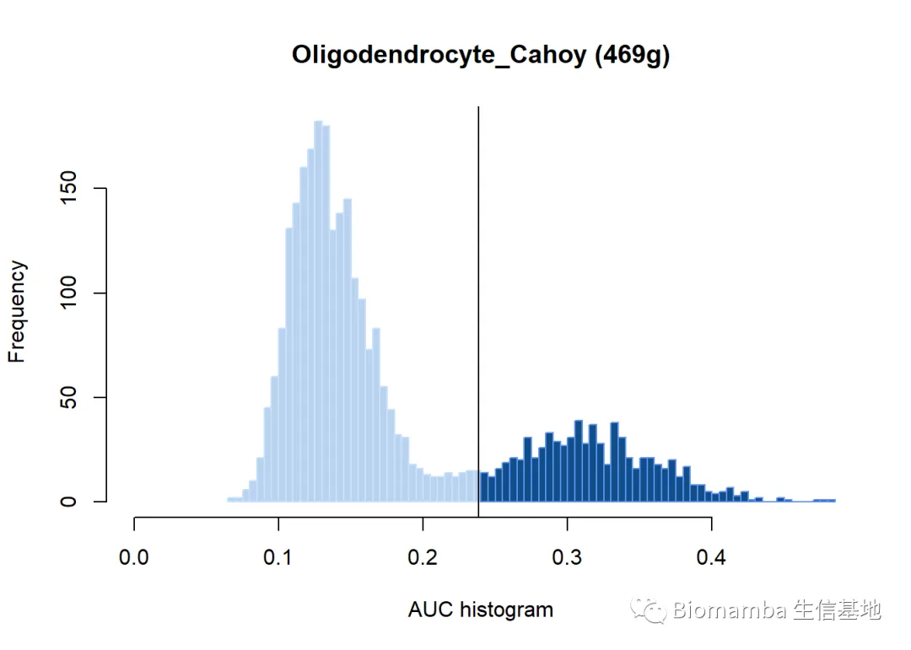
#解放劳动力，还是得靠写循环展示出所有geneset的情况par(mfrow=c(3,3)) for(i in 1:length(cells_assignment)){ temp.name <- gsub(' (.*)','',names(cells_assignment)[i]) temp.cellname <- rownames(cells_AUC)[grep(temp.name, rownames(cells_AUC))] AUCell_plotHist(cells_AUC[temp.cellname,], aucThr=cells_assignment[[i]]$aucThr$selected) abline(v=cells_assignment[[i]]$aucThr$selected)}
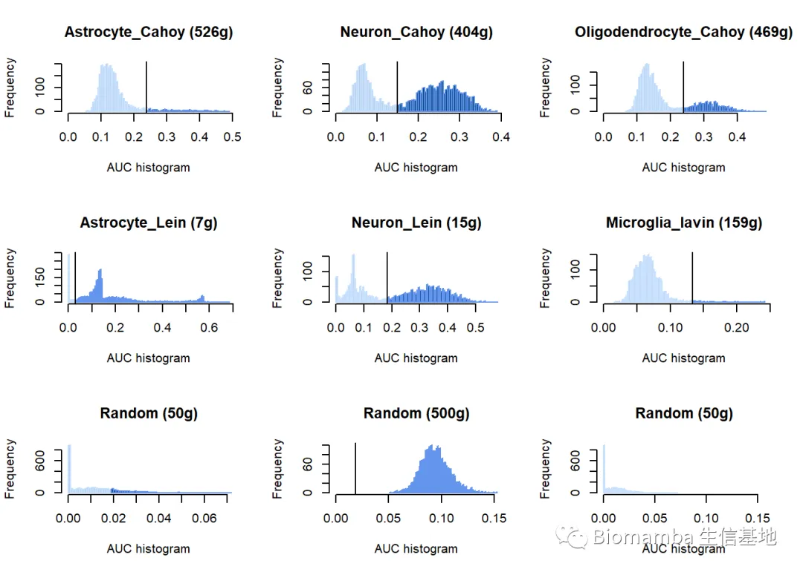
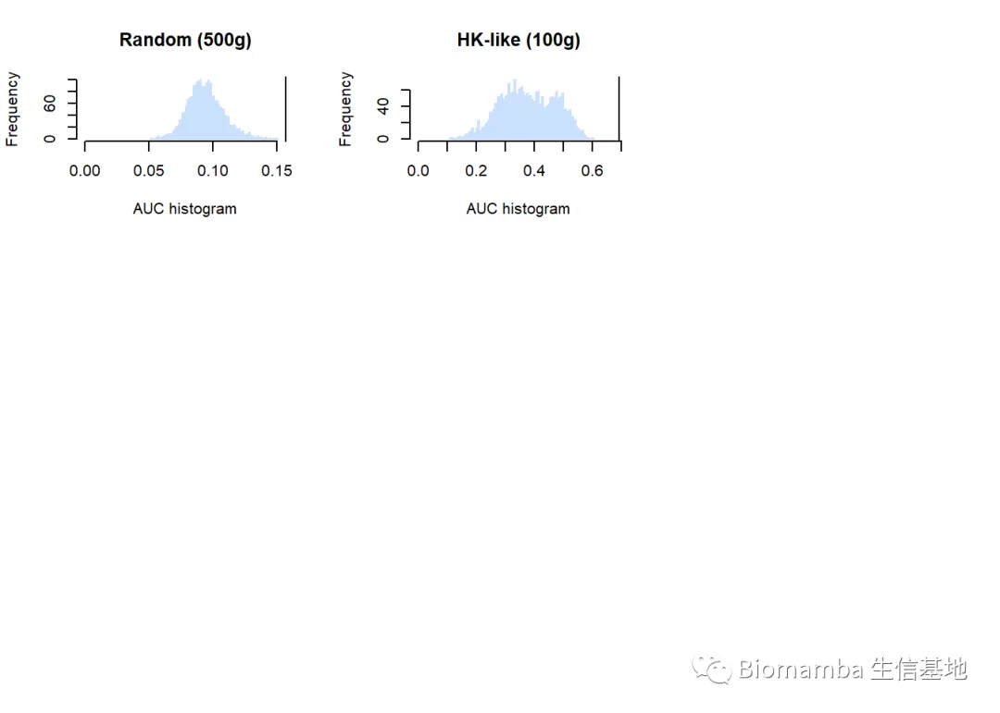
2.3.3 进一步分析
cellsAssigned <- lapply(cells_assignment, function(x) x$assignment)#去除assignment，即'on'的barcodeassignmentTable <- reshape2::melt(cellsAssigned, value.name="cell")#转换成长格式的tablecolnames(assignmentTable)[2] <- "geneSet"head(assignmentTable)
## cell geneSet
## 1 1772071015_A01 Astrocyte_Cahoy (526g)
## 2 1772066080_D10 Astrocyte_Cahoy (526g)
## 3 1772066099_C03 Astrocyte_Cahoy (526g)
## 4 1772071036_B05 Astrocyte_Cahoy (526g)
## 5 1772067060_G06 Astrocyte_Cahoy (526g)
## 6 1772058148_A03 Astrocyte_Cahoy (526g)
assignmentMat <- table(assignmentTable[,"geneSet"], assignmentTable[,"cell"])assignmentMat[1:4,1:4]#统计，table到的就是1(on)，不存在的就是0(off),也就是说geneset从这一步变成了二项分布的矩阵
##
## 1772058148_A01 1772058148_A03 1772058148_A04
## Astrocyte_Cahoy (526g) 0 1 0
## Astrocyte_Lein (7g) 1 1 1
## Microglia_lavin (159g) 0 0 0
## Neuron_Cahoy (404g) 0 0 0
##
## 1772058148_A05
## Astrocyte_Cahoy (526g) 0
## Astrocyte_Lein (7g) 1
## Microglia_lavin (159g) 1
## Neuron_Cahoy (404g) 0
可以通过热图的形式展示这个二元的矩阵
set.seed(123)suppressMessages(library(NMF))aheatmap(assignmentMat, scale="none", color="black", legend=FALSE)
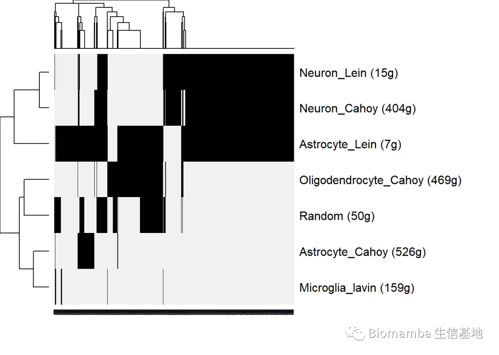
2.3.4 实测一下AUCell score对单细胞分群的帮助
读取原始表达矩阵并进行tsne分析
mouseBrainExprMatrix[1:4,1:4]#表达矩阵sumByGene <- apply(mouseBrainExprMatrix, 1, sum)#对每个基因的count求和exprMatSubset <- mouseBrainExprMatrix[which(sumByGene>0),]#从矩阵中删除不表达的基因logMatrix <- log2(exprMatSubset+1)logMatrix <- as.matrix(logMatrix)library(Rtsne)set.seed(123)cellsTsne <- Rtsne(t(logMatrix))#运行TSNErownames(cellsTsne$Y) <- colnames(logMatrix)colnames(cellsTsne$Y) <- c("tsne1", "tsne2")save(cellsTsne, file="cellsTsne.RData")
load('cellsTsne.RData')cellsTsne <- cellsTsne$Yplot(cellsTsne, pch=16, cex=.3)
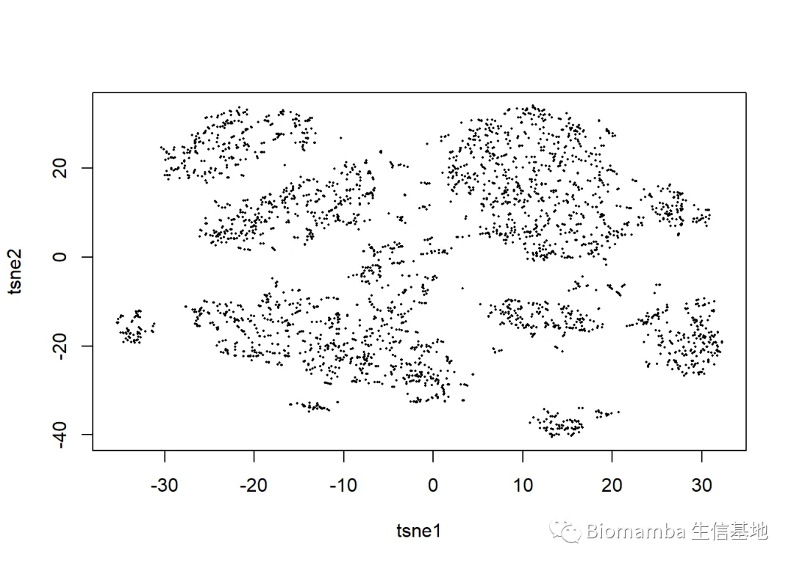
library(DT)datatable(assignmentTable, options = list(pageLength = 10), filter="top")
---|---|---
1| 1772071015_A01| Astrocyte_Cahoy (526g) 2| 1772066080_D10| Astrocyte_Cahoy (526g) 3| 1772066099_C03| Astrocyte_Cahoy (526g) 4| 1772071036_B05| Astrocyte_Cahoy (526g) 5| 1772067060_G06| Astrocyte_Cahoy (526g) 6| 1772058148_A03| Astrocyte_Cahoy (526g) 7| 1772060240_H04| Astrocyte_Cahoy (526g) 8| 1772063063_B11| Astrocyte_Cahoy (526g) 9| 1772060225_B12| Astrocyte_Cahoy (526g) 10| 1772063074_E01| Astrocyte_Cahoy (526g)
*
assignmentTable[1:4,]
## cell geneSet
## 1 1772071015_A01 Astrocyte_Cahoy (526g)
## 2 1772066080_D10 Astrocyte_Cahoy (526g)
## 3 1772066099_C03 Astrocyte_Cahoy (526g)
## 4 1772071036_B05 Astrocyte_Cahoy (526g)
在TSNE图中原位把AUCell score画出来看看，类似于Seurat::FeaturePlot()
selectedThresholds <- getThresholdSelected(cells_assignment)#好吧，原来有直接获得selectedThr的方法，不需要写循环selectedThresholds[1:5]
## Astrocyte_Cahoy (526g) Neuron_Cahoy (404g)
## 0.23844518 0.14918986
## Oligodendrocyte_Cahoy (469g) Astrocyte_Lein (7g)
## 0.23828191 0.03079067
## Neuron_Lein (15g)
## 0.18279180
par(mfrow=c(2,3)) # Splits the plot into two rows and three columnsfor(geneSetName in names(selectedThresholds)){ #处于off状态下的物种颜色： colorPal_Neg <- grDevices::colorRampPalette(c("black","blue", "skyblue"))(5) #处于on状态下的物种颜色： colorPal_Pos <- grDevices::colorRampPalette(c("pink", "magenta", "red"))(5) # 将细胞按照on和off拆开 passThreshold <- getAUC(cells_AUC)[geneSetName,] > selectedThresholds[geneSetName] if(sum(passThreshold) >0 ) { aucSplit <- split(getAUC(cells_AUC)[geneSetName,], passThreshold) # Assign cell color cellColor <- c(setNames(colorPal_Neg[cut(aucSplit[[1]], breaks=5)], names(aucSplit[[1]])), setNames(colorPal_Pos[cut(aucSplit[[2]], breaks=5)], names(aucSplit[[2]]))) plot(cellsTsne, main=geneSetName, sub="Pink/red cells pass the threshold", col=cellColor[rownames(cellsTsne)], pch=16) #这里的绘图方式其实也给我们DIY featurePlot提供了思路 }}
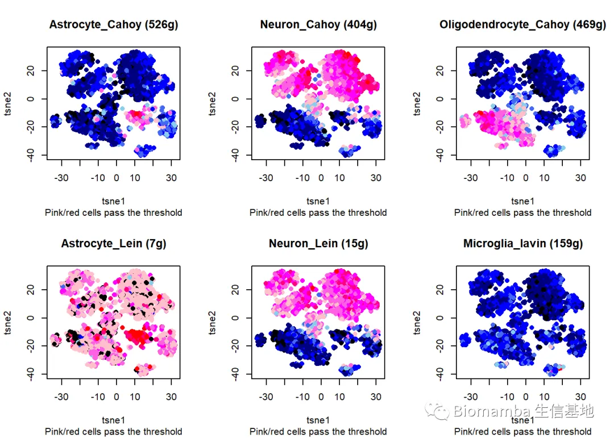
#还有一个更简单的方法：par(mfrow=c(2,3))
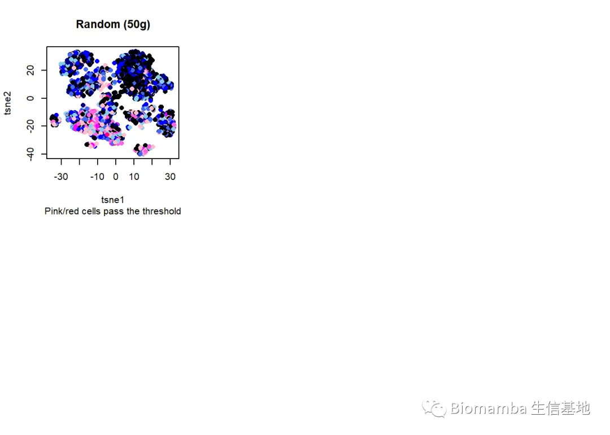
AUCell_plotTSNE(tSNE=cellsTsne, exprMat=exprMatrix, cellsAUC=cells_AUC[1:2,], thresholds=selectedThresholds[1:2])
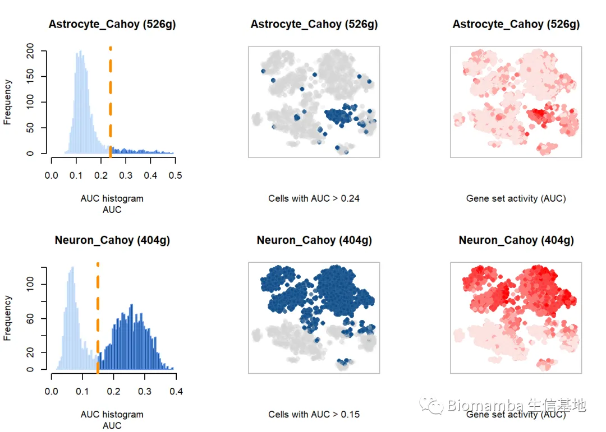
#AUCell_plotTSNE三联分布展示了AUCell score的分布柱状图、TSNE原位展示通过阈值筛选的点、TSNE原位展示AUCell score
作者这里还给了一个自动创建shinyApp的函数，再次让我叹为观止，我来好好学一学，下次给大家写个类似的
library(shiny); library(rbokeh)exprMat <- log2(mouseBrainExprMatrix+1) # (back to the full matrix)# Create app aucellApp <- AUCell_createViewerApp(auc=cells_AUC, thresholds=selectedThresholds, tSNE=cellsTsne, exprMat=exprMat)# Run (the exact commands depend on the R settings, see Shiny's doc for help)options(shiny.host="0.0.0.0") savedSelections <- runApp(aucellApp) # Other common settings:# host = getOption("shiny.host", "127.0.0.1") # shinyApp(ui=aucellApp$ui, server=aucellApp$server)# Optional: Visualize extra information about the cells (categorical variable)cellInfoFile <- paste(file.path(system.file('examples', package='AUCell')), "mouseBrain_cellLabels.tsv", sep="/")cellInfo <- read.table(cellInfoFile, row.names=1, header=TRUE, sep="\t")head(cellInfo)Another example for interactive plot (e.g. to save as html, no need to keep the server running): geneSetName <- "Astrocyte_Cahoy (555g)"library(rbokeh)tSNE.df <- data.frame(cellsTsne, cell=rownames(cellsTsne))figure() %>% ly_points(tsne1, tsne2, data=tSNE.df, size=1, legend = FALSE, hover=cell, color=getAUC(cells_AUC)[geneSetName,rownames(tSNE.df)]) %>% set_palette(continuous_color = pal_gradient(c("lightgrey", "pink", "red")))
2.4 为什么选择AUCell?
其实这个问题上文也解释过，最简单的评价基因集表达量的方法是算平均值，但是平均值容易受到基因表达量、测序文库大小的影响(这也就无法考虑到批次效应等非生物学问题)。而AUCell是对每个细胞的矩阵rank后做富集打分，可以回避这些问题，并且对每个细胞独立分析的策略可以回避normalization的方式(即raw counts, TPM, UMI counts等均可以作为输入数据)
做个简单的对比 这是基因集均值的展示:
logMat <- log2(exprMatrix+2)meanByGs <- t(sapply(geneSets, function(gs) colMeans(logMat[geneIds(gs),])))rownames(meanByGs) <- names(geneSets)colorPal <- grDevices::colorRampPalette(c("white", "red"))(5)par(mfrow=c(3,3))for(geneSetName in names(geneSets)){ cellColor <- setNames(colorPal[cut(meanByGs[geneSetName,], breaks=5)], names(meanByGs[geneSetName,])) plot(cellsTsne, main=geneSetName, axes=FALSE, xlab="", ylab="", sub="Expression mean", col=cellColor[rownames(cellsTsne)], pch=16)}
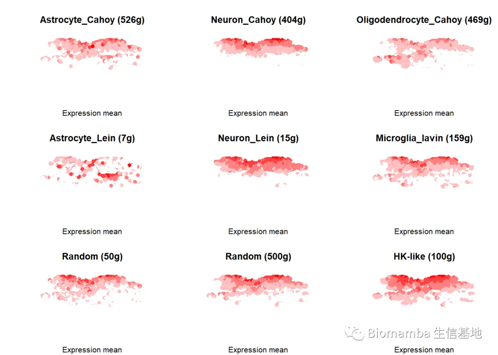
这是AUCell score的展示:
par(mfrow=c(3,3))AUCell_plotTSNE(tSNE=cellsTsne, exprMat=exprMatrix, plots = "AUC",cellsAUC=cells_AUC[1:9,], thresholds=selectedThresholds)
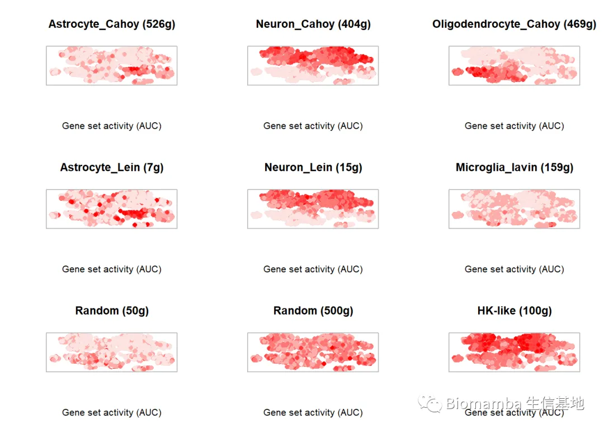
还有一个点是，这类基因集打分的软件大都是打个分即完事，而不仅AUCell自己创立了一套判断on/off的方法，可以帮助大家判断基因集是否被激活；还会为基因集的治疗做出评估，例如上面随机抽样的基因集就被AUCell 发现符合正态分布，不适用于on/off的评价体系。
最后、单细胞教程全收录：
单细胞数据分析系列教程：
B站视频，先看一遍视频再去看推送操作，建议至少看三遍：https://www.bilibili.com/video/BV1S44y1b76Z/以下的资料都可以在这里订阅：2022资料合辑
单细胞测序基础数据分析保姆级教程，代码部分整理在往期推送之中：手把手教你做单细胞测序数据分析（一）——绪论 手把手教你做单细胞测序数据分析（二）——各类输入文件读取 手把手教你做单细胞测序数据分析（三）——单样本分析 手把手教你做单细胞测序数据分析（四）——多样本整合手把手教你做单细胞测序数据分析（五）——细胞类型注释 手把手教你做单细胞测序数据分析（六）——组间差异分析及可视化手把手教你做单细胞测序数据分析（七）——基因集富集分析
上游fastq文件处理： 单细胞分析的最上游——处理Fastq文件：cellranger 单细胞分析的最上游——处理Fastq文件：dropseqRunner有奖提问,这个smart-Seq2数据实战的比对率为何如此低？
细胞通讯B站连续播放起来比较方便： https://www.bilibili.com/video/BV1Ab4y1W7qx?p=1往期推送 单细胞测序数据进阶分析—《细胞通讯》1.概论 单细胞测序数据进阶分析—《细胞通讯》2.1CellChat基础分析教程 单细胞测序数据进阶分析—《细胞通讯》2.2CellChat多组别分析 给你们申请到了免费的128GB云服务器 拟时序分析B站连续播放起来比较方便： https://www.bilibili.com/video/BV1br4y1x7Hf?p=1往期推送 单细胞测序数据进阶分析—《拟时序分析》1.概论 单细胞测序数据进阶分析—《拟时序分析》2.monocle概论单细胞测序数据进阶分析—《拟时序分析》3.monocle2实操：完整版 单细胞测序数据进阶分析—《拟时序分析》4.初识monocle3 单细胞测序数据进阶分析—《拟时序分析》5.monocle3的降维、分群、聚类单细胞测序数据进阶分析—《拟时序分析》6.monocle3的拟时序分析 解决monocle2的orderCells报错的两种方法
其他单细胞相关技术贴也在这里：细胞的数量由誰决定？单细胞中应该如何做GSVA？答读者问（三）：单细胞测序前景答读者问（四）：如何分析细胞亚群答读者问（六）：Seurat中如何让细胞听你指挥答读者问（八）：为什么Read10X也会报错? 答读者问（十）整合后的表达矩阵，如何拆分出分组信息？ 答读者问（十一）如何一次性读取一个目录下的cellranger输出文件？ 给你安排一个懂生信的工具人（十）：不学编程 零代码完成单细胞测序数据分析：Loupe Browser 什么？不做单细胞也能分析细胞类群和免疫浸润？ 答读者问 （十三）查看Seurat对象时的ERROR：type='text' 各类单细胞对象（数据格式）转换大全（一）批量整理好GEO中下载的单细胞数据 答读者问 （十四）Seurat中分类变量处理技巧 答读者问 （十五）稀疏矩阵转matrix, as.matrix函数是下下策 答读者问 （十六）做单细胞测序到底需要多少内存答读者问 （十七）调用的线程越多就算的越快嘛? 答读者问（十八）、一个我至少被问过30遍的monocle报错 一文搞定单细胞基因集评分沉浸式统计细胞比例没有barcode文件的单细胞数据要怎么读取
单细胞文献阅读：Biomamba助推的第二篇文章!发表了！文献阅读（三）、单细胞测序解析糖尿病肾病中肾小球的动态变化 文献阅读（四）、单细胞测序技术解析健康人与T2D患者的胰岛差异文献阅读（六）、小鼠全肾单细胞测序开篇之作文献阅读（七）、一篇不花钱就能白嫖的文章文献阅读（八）、不会吧不会吧，Nature都能白嫖？文献阅读（十一）、高氧下小鼠肺发育损伤的ScRNA图谱文献阅读（十二）、IgAN & STRT-Seq 文献阅读（十三）、老树开新花——EGFR、肿瘤、免疫+scRNA-Seq 文献阅读（十五）、癌前基质细胞驱动BRCA1肿瘤发生文献阅读（十八）、紧跟生信"钱"沿,胰腺癌&免疫多模态图谱 文献阅读（十九）、原发头颈癌和肿瘤转移微生态 文献阅读（二十一）、肾脏疾病&代谢&核受体ESRRA文献阅读（二十二）、PD-1&急性髓细胞性白血病&T Cell
单细胞注释复写单细胞注释复写(一):Human Fetal Kidney单细胞注释复写（二）: human colorectal
非技术帖：关于单细胞的事 谈谈后面的计划趁机预告一波有关提高"Biomamba 生信基地"运行效率事宜 生信分析为什么要使用服务器？

如何联系我们
 公众号后台中消息更新不及时，超过48h后便不允许回复读者消息，这里给大家留一下领取资料、免费服务器的微信号 ，方便大家随时交流、提建议（由助理接待）。此外呼声一直很高的交流群也建好了，欢迎大家入群讨论：永久免费的千人生信、科研交流群
公众号后台中消息更新不及时，超过48h后便不允许回复读者消息，这里给大家留一下领取资料、免费服务器的微信号 ，方便大家随时交流、提建议（由助理接待）。此外呼声一直很高的交流群也建好了，欢迎大家入群讨论：永久免费的千人生信、科研交流群
大家可以阅读完这几篇之后添加笑一笑也就算了如何搜索公众号过往发布内容